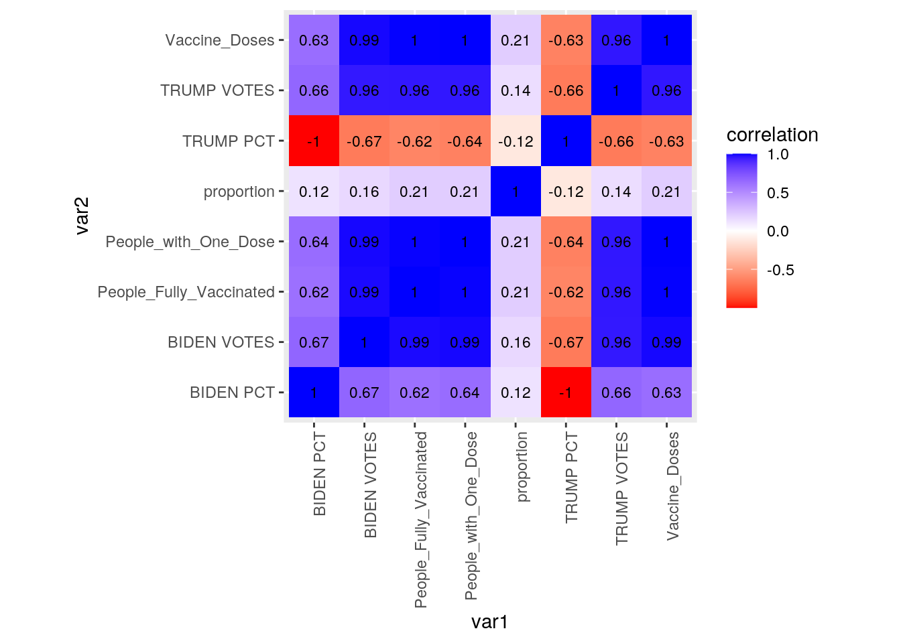
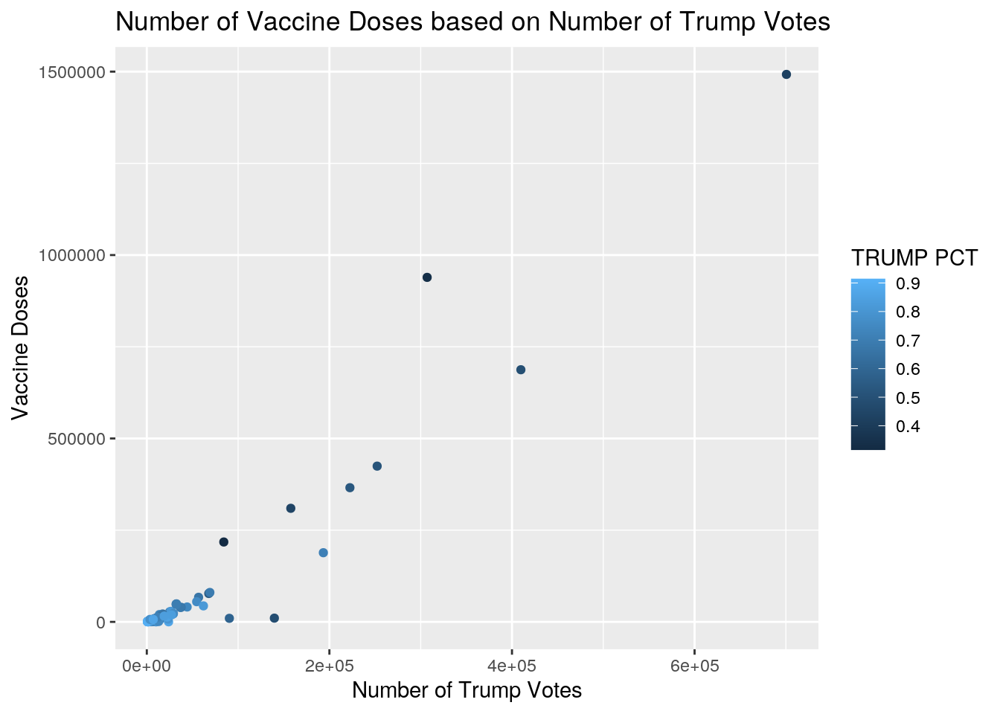
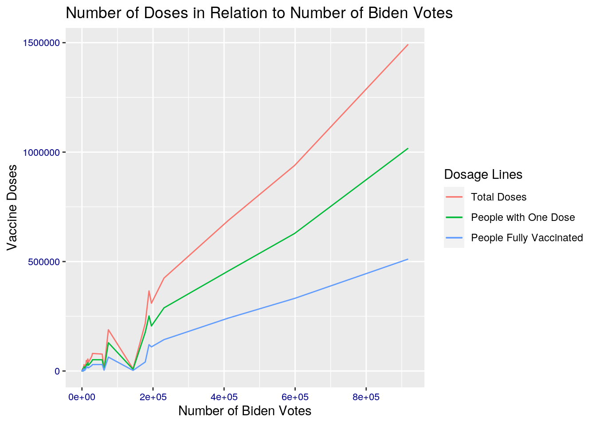
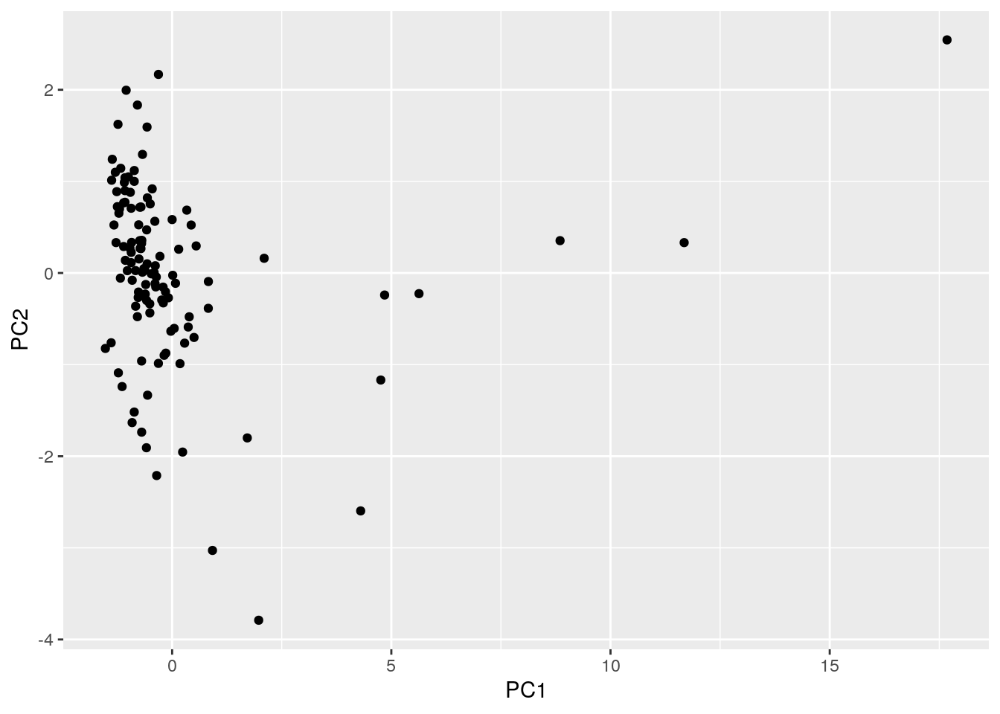

A knitted R Markdown document (ideally HTML) and the raw R Markdown file (as .Rmd) should both be submitted to Canvas by 11:59pm on the due date. These two documents will be graded jointly, so they must be consistent (i.e., don’t change the R Markdown file without also updating the knitted document).
The text of the document should provide a narrative structure around your code/output. All results presented must have corresponding code. Any answers/results/plots etc. given without the corresponding R code that generated the result will not be considered. Furthermore, all code contained in your final project document must work correctly (knit early, knit often)! Please do not include any extraneous code or code which produces error messages. (Code that produces warnings is acceptable, as long as you understand what the warnings mean!)
Find two (!) datasets with one variable in common (e.g., dates, times, states, counties, countries, sports players), both with at least 50 observations (i.e., rows) in each. Please think very carefully about whether it makes sense to combine your datasets! If you find one dataset with 50 patients and it has their age, and you find another dataset with 50 different patients that has their ages, it makes no sense to join them based on age (you would just be pairing up random people of the same age).
When combined, the resulting/final dataset must have at least 4 different variables (at least 3 numeric) in addition to the common variable (i.e., five variables total).
You can have as many variables as you would like! If you found two datasets that you like but they don’t have enough variables, find a third dataset with the same common variable and join all three.
If the datasets are not tidy, you will need to reshape them so that every observation has its own row and every variable its own column. If the datasets are both already tidy, you will make them untidy with pivot_wider()/spread() and then tidy them again with pivot_longer/gather() to demonstrate your use of the functions. It’s fine to wait until you have your descriptives to use these functions (e.g., you might want to pivot_wider() to rearrange the data to make your descriptive statistics easier to look at); it’s fine long as you use them at least once!
Depending on your datasets, it might be a good idea to do this before joining. For example, if you have a dataset you like with multiple measurements per year, but you want to join by year, you could average over your numeric variables to get means/year, do counts for your categoricals to get a counts/year, etc.
If your data sets are already tidy, demonstrate the use of pivot_longer()/gather() and pivot_wider()/spread() on all or part of your data at some point in this document (e.g., after you have generated summary statistics in part 3, make a table of them wide instead of long).
Join your 2+ separate data sources into a single dataset based on a common ID variable! If you can’t find a good pair datasets to join, you may split one main dataset into two different datasets with a common ID variable in each, and then join them back together based on that common ID, but this is obviously less than ideal.
Create summary statistics
Use all six core dplyr functions (filter, select, arrange, group_by, mutate, summarize) to manipulate and explore your dataset. For mutate, create a new variable that is a function of at least one other variable, preferably using a dplyr vector function (see dplyr cheatsheet). It’s totally fine to use the _if, _at, _all versions of mutate/summarize instead (indeed, it is encouraged if you have lots of variables)
Create summary statistics (mean, sd, var, n, quantile, min, max, n_distinct, cor, etc) for each of your numeric variables both overall and after grouping by one of your categorical variables (either together or one-at-a-time; if you have two categorical variables, try to include at least one statistic based on a grouping of two categorical variables simultaneously). If you do not have any categorical variables, create one using mutate (e.g., with case_when or ifelse) to satisfy the group_by requirements above. Ideally, you will find a way to show these summary statistics in an easy-to-read table (e.g., by reshaping). (You might explore the kable package for making pretty tables!) If you have lots of numeric variables (e.g., 10+), or your categorical variables have too many categories, just pick a few (either numeric variables or categories of a categorical variable) and summarize based on those. It would be a good idea to show a correlation matrix for your numeric variables (you will need it to make one of your plots).
Make visualizations (three plots)
stat="summary"Perform k-means/PAM clustering or PCA on (at least) your numeric variables.
Include all steps as we discuss in class, including a visualization.
If you don’t have at least 3 numeric variables, or you want to cluster based on categorical variables too, convert them to factors in R, generate Gower’s dissimilarity matrix on the data, and do PAM clustering on the dissimilarities.
Show how you chose the final number of clusters/principal components
Interpret the final clusters/principal components
For every step, document what your code does (in words) and what you see in the data!
Prerequisite: Finding appropriate data from at least two sources per the instructions above: Failure to do this will result in a 0! You will submit a .Rmd file and a knitted document (html/pdf).
#The data sets I have chosen surround two relatively current events: the ongoing Corona Virus Pandemic and the 2020 US Presidential Election. The data sets I joined were COVID-19 vaccines administered per Texas county and how many votes went to the Democratic presidential candidate, Joe Biden, and the Republican presidential candidate, Donald Trump, per Texas county. The vaccine data includes which Texas counties administered vaccines, how many each county in the data has administered, how many people either have had at least their first dose, and how many people are fully vaccinated. The voting data includes how many votes went to each candidate in each county and the percentage of votes each candidate held per county. My sources for the vaccine data are from the Texas Department of State Health, which is updated daily. I chose to get the data for the presidential votes from Politico becaue it is recognized as an unbiased and statistic-focused news outlet.
#I chose these data sets because I was curious to see if there was a trend between political preference and the likelihood of getting the vaccine. For example, I wanted to know if a county that voted mostly for Biden would be more likely to get the vaccine and vise versa if a county voted mostly for Trump. In today’s political climate, I tend to associate people with conservative views to be less likely to get the vaccine because of doubt shrouding the virus and misinformation. Whereas, those who vote for Biden may have political views that would lead them to be more trusting of the science behind the vaccine, thus more willing to get vaccinated. However, I recognize that there were Republicans who voted for Biden and maybe traditional Democrats who voted for Trump, so there may be a lot of correlation between the data. It’s flawed to solely base the likelihood of someone getting a vaccine on their political views/political party affiliation. However, I would like to see if there is a trend after all! I think there will at least be a positive correlation between those counties who mainly voted for Biden and their likelihood to become vaccinated at the very least. There may not be a trend between counties that voted mostly for Trump and their likelihood to get a vaccine or not because there are so many factors that affect the total number of vaccines a community can administer such as the number of pharmacies, number of people who are available/qualified to administer the vaccine, individuals’ access to transportation to these vaccine administration sites, and more. I am excited to see what information I can get from the data!
tidyr functions pivot_longer/gather and/or pivot_wider/spread)library("dplyr")
library("tidyr")
library(readxl)
library("tibble")
library("ggplot2")
Cumulative_Tests_by_Type_by_County <- read_excel("Cumulative Tests by Type by County.xlsx")
Voting_data <- Cumulative_Tests_by_Type_by_County
Voting_data <- subset(Voting_data, select = -c(6, 7, 8))
Covid_data <- read_excel("Covid data.xlsx")
# Covid_data <- subset(Covid_data, select = c(-Zip_Code))
Covid_data <- Covid_data %>% mutate(across(where(is.character),
~na_if(., "**")))
# tidying data
Covid_data$Vaccine_Doses <- as.numeric(Covid_data$Vaccine_Doses)
Covid_data$People_with_One_Dose <- as.numeric(Covid_data$People_with_One_Dose)
Covid_data$People_Fully_Vaccinated <- as.numeric(Covid_data$People_Fully_Vaccinated)
Clean_Covid_Data <- aggregate(cbind(Vaccine_Doses, People_with_One_Dose,
People_Fully_Vaccinated) ~ County, data = Covid_data, FUN = "sum")#First, I renamed the data for ease of use for later in the project. Then, I removed all of the ** data and replaced them with NA. Then, I turned the character data that was used in my COVID data set into numeric data. Finally, I used aggregate in order to turn all of the separated county data into a single row for each county in Texas.
dplyr join functionjoined_data <- inner_join(Clean_Covid_Data, Voting_data, by = c(County = "County"))#I used inner join so that I would only be including data that is present in both the COVID dataset and the voting data set. There were a few counties that were dropped, since they did not have data in both datasets. This could cause an issue as now not all of the counties are being represented.
dplyr functions in the service of generating summary tables/statistics (12 pts)
summarize alone and with group_by (if you have more than 10 variables, fine to just focus on 10) (20 pts)
# creating a new variable that represents the number of
# vaccine doses over the total voting popluation, it is
# assumed that this variable will correlate with number of
# Biden votes
joined_data <- joined_data %>% mutate(proportion = Vaccine_Doses/(`TRUMP VOTES` +
`BIDEN VOTES`))
# Creating variables that represent if the counties are
# majority Biden or almost entirely Trump
joined_data <- joined_data %>% mutate(biden_majority = ifelse(`BIDEN PCT` >
0.5, TRUE, FALSE))
joined_data <- joined_data %>% mutate(mostly_trump = ifelse(`BIDEN PCT` <
0.2, TRUE, FALSE))
# Sorting the data in order of this new proportion
joined_data %>% arrange(proportion) %>% head()## County Vaccine_Doses People_with_One_Dose People_Fully_Vaccinated
## 1 Hardin 179 107 72
## 2 Llano 90 58 33
## 3 Sherman 16 9 7
## 4 Williamson 10199 7799 2753
## 5 Haskell 116 67 51
## 6 Washington 932 570 389
## TRUMP VOTES TRUMP PCT BIDEN VOTES BIDEN PCT proportion biden_majority
## 1 23858 0.863 3474 0.126 0.006549100 FALSE
## 2 10079 0.796 2465 0.195 0.007174745 FALSE
## 3 886 0.894 91 0.092 0.016376663 FALSE
## 4 139729 0.483 143795 0.497 0.035972263 FALSE
## 5 1840 0.831 353 0.159 0.052895577 FALSE
## 6 12959 0.744 4261 0.245 0.054123113 FALSE
## mostly_trump
## 1 TRUE
## 2 TRUE
## 3 TRUE
## 4 FALSE
## 5 TRUE
## 6 FALSEjoined_data %>% select(County, proportion, Vaccine_Doses, `BIDEN VOTES`,
`TRUMP VOTES`)## County proportion Vaccine_Doses BIDEN VOTES TRUMP VOTES
## 1 Anderson 0.53768686 10251 3955 15110
## 2 Angelina 0.80268272 27467 9143 25076
## 3 Archer 0.52549515 2494 446 4300
## 4 Austin 0.60036116 8644 2951 11447
## 5 Baylor 1.13893858 1910 183 1494
## 6 Bell 0.61955695 77387 57014 67893
## 7 Bosque 0.83067553 7501 1561 7469
## 8 Bowie 0.63230595 23941 10747 27116
## 9 Brazoria 0.06337571 9675 62228 90433
## 10 Brown 0.70085416 11077 2107 13698
## 11 Callahan 0.08197450 553 734 6012
## 12 Camp 0.81195219 4076 1394 3626
## 13 Cass 0.54245010 7501 2795 11033
## 14 Cherokee 0.55595257 10736 4210 15101
## 15 Clay 0.63346824 3600 614 5069
## 16 Coke 0.68480726 1208 178 1586
## 17 Coleman 0.61999022 2537 451 3641
## 18 Collin 0.87859613 424593 230945 252318
## 19 Colorado 0.26152446 2587 2420 7472
## 20 Comanche 0.79950249 4821 853 5177
## [ reached 'max' / getOption("max.print") -- omitted 98 rows ]# Calculating the mean/max values of this proportion
# separated by whether the county is Biden majority or not
joined_data %>% group_by(biden_majority) %>% summarize(mean = mean(proportion))## # A tibble: 2 x 2
## biden_majority mean
## <lgl> <dbl>
## 1 FALSE 0.652
## 2 TRUE 0.916joined_data %>% group_by(biden_majority) %>% summarize(max = max(proportion))## # A tibble: 2 x 2
## biden_majority max
## <lgl> <dbl>
## 1 FALSE 1.51
## 2 TRUE 1.04# Calculating the mean values of the number of people with
# one dose/people fully vaccinated separated by whether the
# county is Biden majority
joined_data %>% group_by(biden_majority) %>% summarize(mean = mean(People_with_One_Dose))## # A tibble: 2 x 2
## biden_majority mean
## <lgl> <dbl>
## 1 FALSE 17342.
## 2 TRUE 507228.joined_data %>% group_by(biden_majority) %>% summarize(mean = mean(People_Fully_Vaccinated))## # A tibble: 2 x 2
## biden_majority mean
## <lgl> <dbl>
## 1 FALSE 9175.
## 2 TRUE 248637.# Number of counties
joined_data %>% summarize(n = n())## n
## 1 118# Quantiles of percentage of Trump votes by county
joined_data %>% summarize(quantile = quantile(`TRUMP PCT`))## quantile
## 1 0.31600
## 2 0.71725
## 3 0.79500
## 4 0.83675
## 5 0.91400# SD of Biden Votes
joined_data %>% summarize(sd = sd(`BIDEN VOTES`))## sd
## 1 111914.2# Mean of Biden Votes
joined_data %>% summarize(mean = mean(`BIDEN VOTES`))## mean
## 1 29429.35# Mean of Trump Votes
joined_data %>% summarize(mean = mean(`TRUMP VOTES`))## mean
## 1 33617.39# Altering the data for a future split
joined_data$biden_majority = ifelse(joined_data$biden_majority ==
TRUE, "Biden", "Trump")
TrumpBidenSplit <- joined_data %>% pivot_wider(names_from = biden_majority,
values_from = Vaccine_Doses)
# Getting the mean number of vaccine doses for Trump/Biden
# majority counties
mean(TrumpBidenSplit$Trump, na.rm = TRUE)## [1] 25843.32mean(TrumpBidenSplit$Biden, na.rm = TRUE)## [1] 739738.2# Getting the maximum number of vaccine doses for Biden
# majority/Mostly Trump counties
joined_data %>% filter(`BIDEN PCT` < 0.2) %>% summarize(max = max(Vaccine_Doses))## max
## 1 43580joined_data %>% filter(`BIDEN PCT` > 0.5) %>% summarize(max = max(Vaccine_Doses))## max
## 1 1492466# Creating correlation matrix
cor_mtx <- joined_data %>% select_if(is.numeric) %>% cor()#I created two categorical variable using mutate - biden_majority will result in true if the percentage of Biden votes is greater than 50%, and mostly_trump will result in true if the proportion of Trump votes is more than 80%. I’ve noted that the average number of vaccine doses in Biden majority counties is 738738.2, while the corresponding average for Trump counties is 25842.32. This could be due to the fact that the Biden counties have much higher population than the Trump counties, but it is worth noting how much smaller the average number of doses is in Trump counties. In terms of just voting statistics, it can be seen that there is a massive standard deviation for number of Biden votes, which could be attributed to both the massive difference in population in counties and the fact that the counties with large populations tended to have a much higher percentage of Biden votes.
Create a correlation heatmap of your numeric variables the way we did in class
Create two more effective, polished plots with ggplot
tidycor <- cor_mtx %>% as.data.frame %>% rownames_to_column("var1") %>%
pivot_longer(-1, names_to = "var2", values_to = "correlation")
tidycor %>% ggplot(aes(var1, var2, fill = correlation)) + geom_tile() +
scale_fill_gradient2(low = "red", mid = "white", high = "blue") +
geom_text(aes(label = round(correlation, 2)), color = "black",
size = 3) + theme(axis.text.x = element_text(angle = 90,
hjust = 1)) + coord_fixed()
ggplot(joined_data, aes(x = `TRUMP VOTES`, Vaccine_Doses)) +
geom_point(aes(color = `TRUMP PCT`)) + labs(title = "Number of Vaccine Doses based on Number of Trump Votes",
x = "Number of Trump Votes", y = "Vaccine Doses")
ggplot(joined_data, aes(`BIDEN VOTES`)) + geom_line(aes(y = Vaccine_Doses,
color = "blue")) + geom_line(aes(y = People_with_One_Dose,
color = "green")) + geom_line(aes(y = People_Fully_Vaccinated,
color = "red")) + labs(title = "Number of Doses in Relation to Number of Biden Votes",
x = "Number of Biden Votes", y = "Vaccine Doses") + scale_color_discrete(name = "Dosage Lines",
labels = c("Total Doses", "People with One Dose", "People Fully Vaccinated")) +
scale_x_continuous(n.breaks = 6) + theme(axis.text = element_text(colour = "darkblue",
size = rel(0.75)))
#First, I display a correlation heat map between each of my numeric variables. There is a higher correlation between Biden votes and vaccine doses than that between Trump votes and number of vaccine doses. However, this difference is so small that it appears that both Biden and Trump votes could potentially be used to model the number of vaccine doses for a county.
#The first plot displays the number of vaccine doses in each county plotted against the number of votes for Donald Trump. In addition, each county is colored by percentage of Donald Trump votes. This plot displays the trend that counties with higher percentage of Trump votes tend to have a lower number of total doses. However, this may be misconstrued by the limited population size for each county.
#The second plot displays the number of vaccine doses in each county plotted against the number of votes for Joe Biden. The lines are separated into total doses, people with a single dose, and people that are fully vaccinated. The general trend of this plot shows that the higher number of Biden votes there are, there will be higher number of total vaccine doses. However, this is also limited by the lack of total population data in the dataset.
Either k-means/PAM clustering or PCA (inclusive “or”) should be performed on at least three of your variables (3 is just the minimum: using more/all of them will make this much more interesting!)
joined_nums <- joined_data %>% select_if(is.numeric) %>% scale
rownames(joined_nums) <- joined_data$County
joined_pca <- princomp(joined_nums)
names(joined_pca)## [1] "sdev" "loadings" "center" "scale" "n.obs" "scores" "call"summary(joined_pca, loadings = TRUE)## Importance of components:
## Comp.1 Comp.2 Comp.3 Comp.4 Comp.5
## Standard deviation 2.4402539 0.9982904 0.9533356 0.237215136 0.111886310
## Proportion of Variance 0.7507169 0.1256377 0.1145771 0.007093996 0.001578193
## Cumulative Proportion 0.7507169 0.8763546 0.9909317 0.998025675 0.999603867
## Comp.6 Comp.7 Comp.8
## Standard deviation 0.0531969954 1.738275e-02 3.181811e-03
## Proportion of Variance 0.0003567635 3.809281e-05 1.276306e-06
## Cumulative Proportion 0.9999606309 9.999987e-01 1.000000e+00
##
## Loadings:
## Comp.1 Comp.2 Comp.3 Comp.4 Comp.5 Comp.6 Comp.7 Comp.8
## Vaccine_Doses 0.397 0.146 0.171 0.199 0.271 0.207 0.798
## People_with_One_Dose 0.398 0.141 0.167 0.208 0.215 0.635 -0.549
## People_Fully_Vaccinated 0.395 0.158 0.182 0.188 0.380 -0.737 -0.250
## TRUMP VOTES 0.392 0.174 -0.900
## TRUMP PCT -0.321 0.454 0.436 -0.707
## BIDEN VOTES 0.399 0.170 0.258 -0.854 -0.104
## BIDEN PCT 0.321 -0.452 -0.436 -0.707
## proportion 0.718 -0.686joined_df <- data.frame(Name = joined_data$County, PC1 = joined_pca$scores[,
1], PC2 = joined_pca$scores[, 2])
ggplot(joined_df, aes(PC1, PC2)) + geom_point() #Using this PCA, I would select only the first two principle components, as together they explain almost 99% of the variance within the data. The first component appears to be a linear combination using .4 of almost every single variable, with percentage of Trump votes taking a negative coefficient. The major difference between the first and second PC appears the be the coefficient associated with percentage of Trump votes.
## paste this chunk into the ```{r setup} chunk at the top of
## your project 1 .Rmd file
knitr::opts_chunk$set(echo = TRUE, eval = TRUE, fig.align = "center",
warning = F, message = F, tidy = TRUE, tidy.opts = list(width.cutoff = 60),
R.options = list(max.print = 100))OK, brace yourself!
You can choose ANY datasets you want that meet the above criteria for variables and observations. I’m just sitting here but off the top of my head, if you are into amusement parks, you could look at amusement-park variables, including ticket sales per day etc.; then you could join this by date in weather data. If you are interested in Game of Thrones, you could look at how the frequency of mentions of character names (plus other character variables) and the frequency of baby names in the USA…You could even take your old Biostats data and merge in new data (e.g., based on a Google forms timestamp).
You could engage in some “me-search”: You can request your Spotify data or download Netflix viewing activity, Amazon purchase history, etc. You can use your Google Fit/Fitbit/Apple watch data, etc. These can be combined (e.g., with each other, with other data sources).
You can make it as serious as you want, or not, but keep in mind that you will be incorporating this project into a portfolio webpage for your final in this course, so choose something that really reflects who you are, or something that you feel will advance you in the direction you hope to move career-wise, or something that you think is really neat. On the flip side, regardless of what you pick, you will be performing all the same tasks, so it doesn’t end up being that big of a deal.
If you are totally clueless and have no direction at all, log into the server and type
data(package = .packages(all.available = TRUE))This will print out a list of ALL datasets in ALL packages installed on the server (a ton)! Scroll until your eyes bleed! Actually, do not scroll that much… To start with something more manageable, just run the command on your own computer, or just run data() to bring up the datasets in your current environment. To read more about a dataset, do ?packagename::datasetname.
If it is easier for you, and in case you don’t have many packages installed, a list of R datasets from a few common packages (also downloadable in CSV format) is given at the following website: https://vincentarelbundock.github.io/Rdatasets/datasets.html (including types/numbers of variables in each)
A good package to download for fun/relevant data is fivethiryeight. Just run install.packages("fivethirtyeight"), load the packages withlibrary(fivethirtyeight), rundata()`, and then scroll down to view the datasets. Here is an online list of all 127 datasets (with links to the 538 articles). Lots of sports, politics, current events, etc: https://cran.r-project.org/web/packages/fivethirtyeight/vignettes/fivethirtyeight.html
If you have already started to specialize (e.g., ecology, epidemiology) you might look at discipline-specific R packages (vegan, epi, respectively). We will be using some tools from these packages later in the course, but they come with lots of data too, which you can explore according to the directions above
However, you emphatically DO NOT have to use datasets available via R packages! In fact, I would much prefer it if you found the data from completely separate sources and brought them together (a much more realistic experience in the real world)! You can even reuse data from your SDS328M project, provided it shares a variable in common with other data which allows you to merge the two together (e.g., if you still had the timestamp, you could look up the weather that day: https://www.wunderground.com/history/). If you work in a research lab or have access to old data, you could potentially merge it with new data from your lab!
Here is a curated list of interesting datasets (read-only spreadsheet format): https://docs.google.com/spreadsheets/d/1wZhPLMCHKJvwOkP4juclhjFgqIY8fQFMemwKL2c64vk/edit
Here is another great compilation of datasets: https://github.com/rfordatascience/tidytuesday
Here is the UCI Machine Learning Repository: https://archive.ics.uci.edu/ml/index.php
Here is another good general place to look: https://www.kaggle.com/datasets
To help narrow your search down or to see interesting variable ideas, check out https://www.tylervigen.com/spurious-correlations. This is the spurious correlations website, and it is fun, but if you look at the bottom of each plot you will see sources for the data. This is a good place to find very general data (or at least get a sense of where you can scrape data together from)!
If you are interested in medical data, check out www.countyhealthrankings.org
If you are interested in scraping UT data, the university makes loads of data public (e.g., beyond just professor CVs and syllabi). Check out all the data that is available in the statistical handbooks: https://reports.utexas.edu/statistical-handbook
Data.gov 186,000+ datasets!
Social Explorer is a nice interface to Census and American Community Survey data (more user-friendly than the government sites). May need to sign up for a free trial.
U.S. Bureau of Labor Statistics
Gapminder, data about the world.
…